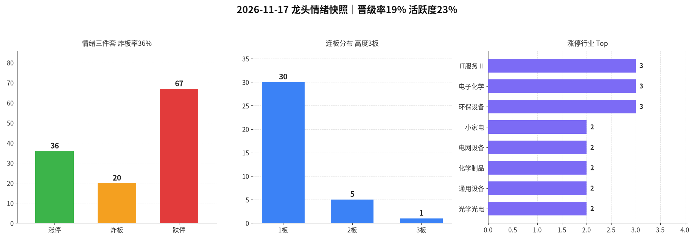

交易日 2026-11-17（周二） · 目标交易日 2026-11-18（周三） · 退潮未出·跌停再扩
情绪：退潮 涨停 36 · 跌停 67 炸板率 35.7% · 晋级率 18.8% · 高度 3板| 票 | 昨动作 | 今收盘涨跌幅 | 判定 |
|---|---|---|---|
| 全市场 | 空仓观望 | 涨停32→36微升，跌停60→67，高度4→3断板，创业板−1.20% | 对 |
| 影视/游戏 | 只观察/不加 | 文投跌停、横店跌停、金逸炸收−5.88%、凯撒炸4收+6.65%；幸福蓝海−10.79%、中影−8.31%、上海电影−7.83% | 对 |
| 算力中军 | 不加 | 杀伤收敛但仍全线收绿：东山−5.49%、景旺−5.39%、天孚−5.07%、旭创−3.90%，无反包 | 对 |
| 高度 | 不加 | 北纬断4板收−7.31%；广百炸13收+5.61%；国统跌停；天普继续停牌 | 对（纪律） |
| 昨跌停/脏板 | 不抄/不加 | 大东方/惠发/襄阳3连跌；日出东方/金辰/通化金马2连跌；岳阳兴长/新能/华数跌停 | 对 |
一句话：五条指令全对——空仓躲过游戏影视溃败和高度断板；跌停继续扩散，说明还不是抄底或试错日。改进（未回测）：退潮日即便涨停略增、出现相对干净的家电2板，只要跌停仍在扩散、原高度断板，次日仍不升级为试错。
涨停 36（周一32↑微升，未真正修复），跌停东财池 67（周一60↑继续扩散，其中3连跌8家、2连跌16家），晋级率 18.8%（6/32，较30.6%回落，且晋级票里顺钠炸12、北投炸14），炸板率 35.7%（20/56，周一33.3%↑略升仍偏高），红盘约 24.3%（东财涨跌分布：上涨1307 / 下跌3947 / 平盘126；乐咕已更新，活跃度23.28%）。指数继续偏弱（上证 −0.50%、创业板 −1.20%、中证1000 −1.17%，科创50 +0.62%单独翻红改变不了结构），两市再缩约268亿至约14577亿。涨停池成交额约233亿，跌停池约392亿仍明显反超。连板高度从4板降到 3板（仅华东重机一字，额2.28亿）。定性仍是 退潮：不是冰点（仍有36家涨停、家电出现2板），但亏钱效应没有收敛。默认继续空仓，不追华东重机孤立小额3板，不接力家电2板，不回流算力，不抄跌停。
今日为退潮，且跌停继续扩散、炸板率偏高、昨游戏/影视脉冲簇资金撤出，触发情绪→路线2风险过滤。
| 指标 | 数值 | 备注 |
|---|---|---|
| 涨停家数 | 36 | 已剔 ST / 北交所；东财涨停池 raw37→clean36（剔北交所佳先股份920489） |
| 跌停家数 | 67 | 东财跌停池 raw67=clean67（无ST/北交所）；较周一60继续扩散，3连跌8家、2连跌16家。含文投控股、横店影视、国统股份、华数传媒、襄阳轴承（3连）、大东方（3连）、惠发（3连）等 |
| 炸板家数 | 20 | 炸板池 clean20（raw20=clean20） |
| 炸板率 | 35.7% | 炸板/(涨停+炸板)=20/56；较周一33.3%略升，仍偏高 |
| 连板高度 | 3板 | 仅华东重机（工程机械，一字开、炸0，额仅2.28亿）——量小且孤立，不当空间龙。周一4板北纬今日断板 |
| 连板结构 | 3板 1 / 2板 5 / 1板 30 | 2板里顺钠炸12、北投炸14，长虹美菱/小熊早盘相对干净但额只有2.29亿、4.14亿；瀛通炸1 |
| 昨日涨停数 | 32 | previous 池 raw32=clean32，与周一涨停池一致 |
| 晋级数 / 晋级率 | 6 / 18.8% | 口径同前：previous∩今日涨停池；较30.6%回落，质量差（两只极脏2板） |
| 高度/主线样本 | 原高度梯队全部断板（北纬/广百/国统）；游戏影视零晋级且出现跌停；晋级6家不是昨主线 | |
| 两市成交额 | 约 14577亿（新浪：上证≈6905.15 + 深成≈7671.80；周一约14845↓，缩量约268） | |
| 涨停池成交额 | 约 233亿（仅涨停标的，周一约211↑；跌停池约392亿，仍约1.7倍反超） | |
| 红盘占比 | 约 24.3%（东财涨停专题涨跌分布：上涨1307 / 下跌3947 / 平盘126。乐咕已更新至 2026-11-17 15:00：上涨1216 / 下跌3882 / 平盘119，活跃度23.28%；口径略异，并存注明） | |
读表一句话：涨停只微升、跌停再扩、高度断板、晋级率掉回18.8% = 退潮没有走出来。家电2板和红盘略升不改变这个判断。周三默认空仓。

附图：涨停 / 炸板 / 跌停柱状 + 连板分布 + 行业集中（emotion_20261117.png）
3板：华东重机（工程机械，竞价一字+10.02%，早封干净，额仅 2.28亿、换手3.4%）——量能不够、题材孤立，不加。
已断高度：北纬科技断4板，收 −7.31%，额16.03亿；广百股份竞价+9.91%接近涨停后炸 13，收 +5.61%；国统股份竞价−9.92%，收 −9.99%跌停。天普股份继续停牌，若复牌也不追。
脏2板：顺钠股份（电网设备）炸 12、14:47才封，额18.65亿、换手25.5%；北投科技（IT服务）炸 14、14:48才封，额10.51亿——都是极脏晋级，不加。瀛通通讯炸1、额4.31亿，统计6/4，不加。
有研新材（半导体）额约 47.51亿（今日涨停池第一大额），竞价−1.29%，炸 8，14:45才封——典型大额脏回封，不加。华胜天成（IT服务，周一首板失败后今日再封）额14.03亿，炸1、9:47回封，统计3/2，孤立修复，不加。阳光照明统计14/8、额18.92亿，属反复老妖，不加。电池/电视广播等周一首板今日分化：华数传媒跌停、吉视传媒−6.76%、领湃−3.20%、紫竹+4.24%、共进+0.61%，没有形成连板，不加。
主线判断依据 = 涨停池成交额集中度 + 封板质量 + 晋级质量；退潮日的家电回流簇、孤立小额3板，都不能当成新主线。
情绪 = 退潮 → 专项总仓建议 0%（默认空仓，未回测）；同时持仓建议 0 只；不追华东重机孤立小额3板，不接力家电2板，不追有研新材等大额脏首板，不回流算力，不抄跌停。
| 动作 | 空仓观望（默认） |
|---|---|
| 进场 | 无。周三竞价若昨涨停大量低开＞5%，或跌停仍在双位数、指数快速跳水 → 全天不交易 |
| 仓位 | 0% |
| 原因 | 跌停从60扩到67、晋级率掉到18.8%、高度断板到孤立小额3板、昨游戏影视簇溃败；退潮未出，优先保命 |
| 作废 | 仅当盘中同时出现「跌停收窄到个位数、炸板率回落、新板块≥8家早盘干净首板」才允许把指令2升级为极轻观察（否则维持空仓） |
| 标的 | 000521 长虹美菱、002959 小熊电器、002242 九阳股份、600619 海立股份；300824 北鼎股份、002035 华帝股份只记观察 |
|---|---|
| 动作 | 只观察 / 默认不加 |
| 进场 | 无开仓。即使竞价高开或回封，也不追板、不打前排。记录封板与跟风，供跌停收敛后再议 |
| 仓位 | 0% |
| 原因 | 退潮日相对最整齐的回流簇，但干净2板额都小，九阳是炸2的大额首板，同链条日出东方已2连跌，不是新主升 |
| 标的 | 剑桥科技 / 东山精密 / 光迅科技 / 深南电路 / 景旺电子 / 长飞光纤 / 英维克 / 沪电股份 / 源杰科技 / 智微智能 / 生益科技 / 天孚通信，以及中际旭创 / 新易盛 / 胜宏、海光信息 / 浪潮信息 |
|---|---|
| 动作 | 不加（不抄阴跌中军，反抽也不补） |
| 仓位 | 0% |
| 原因 | 跌停级杀伤虽收敛，但仍全线收绿、没有中军反包，退潮期不二次试错同一主题 |
| 标的 | 华东重机；北纬科技 / 广百股份 / 国统股份已断板不加；天普股份若复牌也不追 |
|---|---|
| 动作 | 不加 |
| 仓位 | 0% |
| 原因 | 华东重机3板额仅2.28亿、工程机械孤立；原4板/3板今日全部断板。退潮期不把小额孤立高度当空间龙。若华东竞价打开后直线砸 → 强化全天空仓 |
| 标的 | 有研新材 / 顺钠股份 / 北投科技 / 华胜天成 / 阳光照明 / 瀛通通讯，以及任何炸板≥4次回封票 |
|---|---|
| 动作 | 不加 |
| 仓位 | 0% |
| 原因 | 有研炸8尾盘才封、顺钠炸12、北投炸14，都是退潮日脏板；阳光照明14/8属反复老妖。退潮日更要避开脏板 |
| 标的 | 文投控股 / 横店影视 / 国统股份 / 华数传媒 / 大东方 / 惠发食品 / 襄阳轴承 / 日出东方 / 金辰股份 / 通化金马，以及今日其余跌停票；凯撒文化/金逸影视断板也不接反抽 |
|---|---|
| 动作 | 不加 / 不抄底 |
| 仓位 | 0% |
| 原因 | 跌停已扩到67家、3连跌8家，抄跌停不是退潮策略；昨2板文投/横店直接砸死，更不能当超跌反弹 |